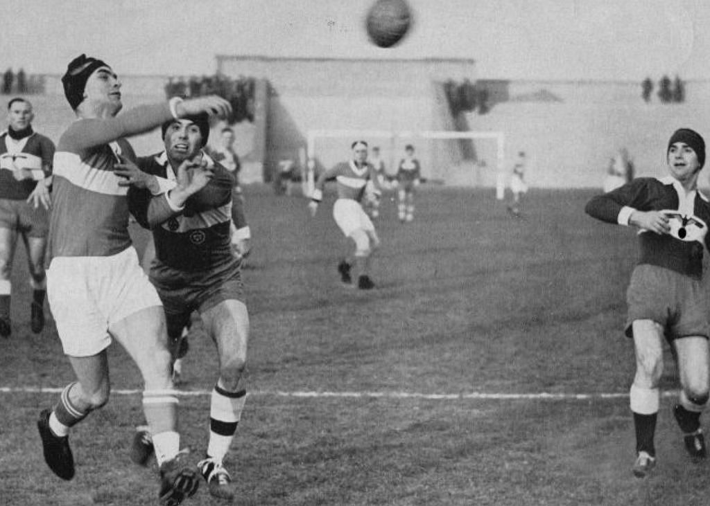
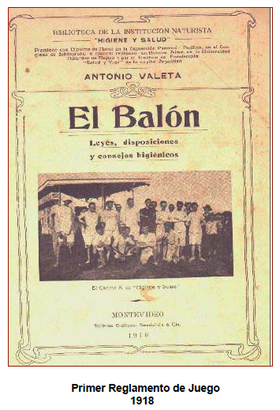
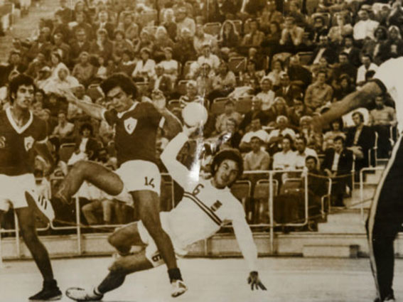

Origen y Evolución
El balonmano tiene sus raíces en juegos antiguos que se practicaban en distintas civilizaciones. Se han encontrado referencias a juegos similares en la antigua Grecia y en civilizaciones precolombinas. Sin embargo, el balonmano moderno tal como lo conocemos hoy comenzó a desarrollarse en Europa a finales del siglo XIX y principios del XX, cuando diferentes países comenzaron a establecer reglas más organizadas.
En Dinamarca, Alemania y Suecia, se practicaban versiones primitivas del balonmano, aunque con variaciones en la cantidad de jugadores y el tamaño del campo. A medida que se popularizaba, los clubes deportivos y las escuelas adoptaron el juego, lo que facilitó su expansión y desarrollo estructurado.
Primeras Reglas
Las primeras reglas oficiales del balonmano fueron establecidas en Alemania en 1917 por Karl Schelenz, quien adaptó un deporte conocido como "Torball". Este deporte inicial se jugaba en campos grandes y con equipos de 11 jugadores, similar al fútbol, pero usando las manos.
En 1928, se fundó la Federación Internacional de Balonmano Amateur (IAHF), lo que ayudó a estandarizar las reglas y organizar competiciones internacionales. Con el tiempo, la modalidad de 7 jugadores en pista cubierta ganó popularidad, convirtiéndose en la versión más extendida del deporte en la actualidad.
Balonmano en los Juegos Olímpicos
El balonmano debutó en los Juegos Olímpicos de Berlín en 1936, aunque en ese momento se jugaba al aire libre con 11 jugadores por equipo. Sin embargo, la falta de instalaciones adecuadas y la dificultad para practicarlo en condiciones climáticas adversas llevaron a su eliminación del programa olímpico.
Fue en los Juegos Olímpicos de Múnich 1972 cuando el balonmano regresó, esta vez en su formato actual de 7 jugadores en pista cubierta. La categoría femenina se incluyó en Montreal 1976, consolidando el deporte como una disciplina olímpica permanente. Desde entonces, ha crecido en popularidad y se ha expandido a nivel global, con numerosos torneos internacionales organizados por la Federación Internacional de Balonmano (IHF).
